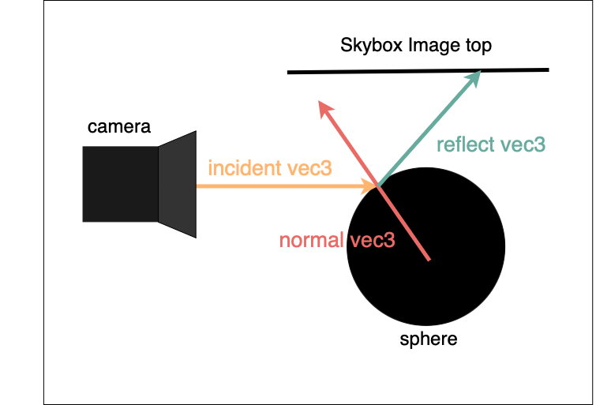

EduGraf Tutorial: Cubemap Environment Mapping
Resources
Introduction
In this tutorial, we learn how to create a Cubemap with a Sphere inside, that reflects the environment.
We start by creating a Cubemap and mapping the textures onto it correctly. Then we add a Sphere and create a
custom Shader for it, which reflects the surrounding environment, in our case the CubeMap.
Create a Cubemap
We start by creating a new Rendering. In the constructor, the first step is loading the images. Make
sure you have downloaded them. in this example we use the FieldMap (images under /assets/FieldCubeMap/...).
The loading of the front image is already implemented. Your task is to implement loading the rest of the images. Note, that you might have to
flip and/or rotate the images:
public class CubeMapRendering : Rendering
{
const float Scale = 5f;
private readonly string _imageName = "Field";
public CubeMapRendering(Graphic graphic) : base(graphic, new Color3(0, 0, 0))
{
// Load images
using var imageFront = Image.Load<Rgba32>("assets/" + _imageName + "CubeMap/" + _imageName + "Front.png");
imageFront.Mutate(context => context.Flip(FlipMode.Vertical));
// TODO: Load the remaining five images
}
}
Next we create the cube by making the six faces separately and positioning them accordingly in space. To do
so, we first need to create a class to represent one Face. The TextureUV represents the vertices of the Face.
For them, we use the default order also used in the EduGraf Cube:
private class Face
{
public float[] Positions { get; }
public ushort[] Triangles { get; }
public float[] TextureUv { get; }
public Face(float[] positions, ushort[] triangles)
{
Positions = positions;
Triangles = triangles;
TextureUv =
[
0.0f, 0.0f,
1.0f, 0.0f,
1.0f, 1.0f,
0.0f, 1.0f
];
}
}
Now we can extract the Faces out of the Cube Element. For each face we
- Extract the positions (x,y,z) of each of the four vertices (4*3=12).
- Extract the triangles. A Face consists of two triangles, each having three points (2*3=6).
private Face[] GetFacesOfCube()
{
var positions = Cube.Positions;
var triangles = Cube.Triangles;
Face[] faces = new Face[6];
for (int faceIndex = 0; faceIndex < 6; faceIndex++)
{
float[] facePositions = new float[12];
int currentPositionsModifier = faceIndex * 12;
for (int i = 0; i < 12; i++)
{
facePositions[i] = positions[i + currentPositionsModifier];
}
ushort[] faceTriangles = new ushort[6];
for (int i = 0; i < 6; i++)
{
faceTriangles[i] = triangles[i];
}
faces[faceIndex] = new Face(facePositions, faceTriangles);
}
return faces;
}
Now that we have six plain Faces, we need to map the textures onto it correctly. For this we create a
method GetFace. It is important that it exposes the texture, such that the Sphere can later reflect it. To
do so we add an out
parameter to the method.
First we create the texture and shading using the provided image. Then we create the Face geometry using the
parameters provided by the given face. Finally, we create a Visual using the geometry and shading and return a Visual.
private VisualPart GetFace(Graphic graphic, Image<Rgba32> image, Face face, String name, out GlTextureHandle texture)
{
// Create Texture
texture = (GlTextureHandle)Graphic.CreateTexture(image);
// Create face shading
var material = new ColorTextureMaterial(1f, 1f, texture);
var shading = graphic.CreateShading("emissive", material, [new AmbientLight(new Color3(1f, 1f, 1f))]);
var positions = face.Positions;
var geometry = Geometry.CreateWithUv(positions, positions, face.TextureUv, face.Triangles);
var visual = graphic.CreateVisual(name, graphic.CreateSurface(shading, geometry));
return visual;
}
Next we can use the created functions to actually display the Cube. First we create the Faces and then
add them to the Scene. Add the following to the bottom of the constructor:
Face[] faces = GetFacesOfCube(Cube.Positions, Cube.Triangles);
var faceFront = GetFace(graphic, imageLeft, faces[0], "left", out var frontTexture);
var faceBack = GetFace(graphic, imageFront, faces[1], "front", out var backTexture);
var faceLeft = GetFace(graphic, imageRight, faces[2], "right", out var leftTexture);
var faceRight = GetFace(graphic, imageBack, faces[3], "back", out var rightTexture);
var faceTop = GetFace(graphic, imageTop, faces[4], "top", out var topTexture);
var faceBottom = GetFace(graphic, imageBottom, faces[5], "bottom", out var bottomTexture);
var cubePosition = new Point3(0, 0, 0);
foreach (var face in new[]
{
faceFront
.Scale(Scale)
.Translate(cubePosition.Vector),
faceBack
.Scale(Scale)
.Translate(cubePosition.Vector),
faceLeft
.Scale(Scale)
.Translate(cubePosition.Vector),
faceRight
.Scale(Scale)
.Translate(cubePosition.Vector),
faceTop
.Scale(Scale)
.Translate(cubePosition.Vector),
faceBottom
.Scale(Scale)
.Translate(cubePosition.Vector)
})
{
Scene.Add(face);
}
Display the rendering
To display the rendering we create a new Class containing the Main() function. The camera is positioned
slightly offset to the center, such that the Sphere will be visible. The size of the window can be adjusted
if desired.
public static class Program
{
public static void Main()
{
var graphic = new OpenTkGraphic();
var camera = new OrbitCamera(new Point3(3, 3, 1), Point3.Origin);
using var window = new OpenTkWindow("CubeMapRendering", graphic, 1024, 768, camera.Handle);
var rendering = new CubeMapRendering(graphic);
window.Show(rendering, camera);
}
}
Create a reflecting sphere using shaders
Now we are ready to create the sphere. For that we first need to create the Shader.
Every shader consists of a VERTEX_SHADER and a FRAGMENT_SHADER. The VERTEX_SHADER in this case only provides us with the
gl_Position which is utilised by the underlying shader and not by us directly and the surfacePosition which we need for
our calculations in the FRAGMENT_SHADER.
public class ReflectionShading : GlShading
{
private const string VERTEX_SHADER = @"
#version 410
in vec3 Position;
uniform mat4 Model;
uniform mat4 View;
uniform mat4 Projection;
out vec3 surfacePosition;
void main(void)
{
gl_Position = vec4(Position, 1.0) * Model * View * Projection;
surfacePosition = vec3(vec4(Position, 1.0) * Model);
}";
In the same file we will create the FRAGMENT_SHADER which will calculate where in the skybox to lookup the texture.
First we require the surfacePosition from the VERTEX_SHADER by creating an in vec3. The CameraPosition is provided by default.
To calculate the reflection vector we utilise the reflect function and provide it with the vector from the camera to the surfacePosition
and the normal vector on that exact position.

Lastly we need to subtract the surfacePositions separate coordinates and divide through the reflected vectors, here shown on the z axis
leading to the value of 't'
private const string FRAGMENT_SHADER = @"
#version 330
in vec3 surfacePosition;
uniform vec3 CameraPosition;
uniform float scale;
uniform sampler2D front;
uniform sampler2D back;
out vec4 FragColor;
void main()
{
vec3 incident = normalize(surfacePosition - CameraPosition);
vec3 reflected = reflect(incident, normalize(surfacePosition));
float t = (scale - surfacePosition.z) / reflected.z;
FragColor = vec4(0, 0, 0, 0);
Now we can start calculating where in the texture we need to lookup the image data. for this a simple calculation using the
value of t with the reflected vector along with the surface position we can locate the exact spot where the reflection vec3 hits the skybox.
As the skybox is scaled in the program we need account for the scale in this calculation leading to the vec2 value 'uv'. This vec2 represents
the x and y location of the texture of where we need to read the image data. Furthermore the uv must represent a value between 0 and 1 which is why
we scale it down to (1-;1) and then half it (-0.5;0.5) and finally add 0.5 (0;1).
Lastly slight adjustments must be made when the z value moves into the negative which would mean the reflection is on the back of the sphere
(as long as the sphere remains centered on (0,0,0)). For this surfacePosition.z is negative so instead of subtracting we now add it.
The next change is that we now subtract the t * reflected value as well as the manipulation of the uv value that resulted. This manipulation
must be done according to what the reflection looks like when loading up the program. How it looks up the image data can be rotated using this
manipulation. Another manipulation to rotate in the other direction can also be done by subtracting uv.y from 1.
if (t > 0) {
vec2 uv = 0.5 * (surfacePosition.xy + t * reflected.xy) / scale + 0.5;
if (0 <= uv.x && uv.x < 1 && 0 <= uv.y && uv.y < 1) FragColor = texture(front, uv);
}
if (t < 0) {
t = (scale + surfacePosition.z) / reflected.z;
vec2 uv = 0.5 * (surfacePosition.xy - t * reflected.xy) / scale + 0.5;
uv = vec2(1- uv.x, uv.y);
if (0 <= uv.x && uv.x < 1 && 0 <= uv.y && uv.y < 1) FragColor = texture(back, uv);
}
}";
The final step in the programming of this shader is to define the actual ReflectionShading constructor correctly.
Important here is that we define the textures as a GlNamedTextureShadingAspect along with their names front and back to be used
in the shader as done in the previous step. With this step we have completed the shader and can move on to creating the sphere.
public ReflectionShading(GlGraphic graphic, GlTextureHandle[] textures, float scale) : base(
"uniform",
graphic,
VERTEX_SHADER,
FRAGMENT_SHADER,
new GlNamedTextureShadingAspect("front", textures[0]),
new GlNamedTextureShadingAspect("back", textures[1]))
{
DoInContext(() => Set("scale", scale));
}
}
All that's missing now is the Sphere, so let's create it. Initially, we create a new Shading using our
ReflectionShading and giving it the graphic along with the textures for the 6 sides of the skybox as well as the scaling of the skybox.
Like any other object we require its positions, triangles and uvs. After getting these from the Sphere class we can combine them to create the
geometry of the sphere and then add the shading using the graphic.CreateSurface() method. Lastly our function should return a visual so that
we can add it to the scene.
private VisualPart GetSphere(Graphic graphic, GlTextureHandle[] textures, float scale)
{
// Create sphere shading
var shading = new ReflectionShading((GlGraphic)graphic, textures, scale);
// Set up sphere geometry
var positions = Sphere.GetPositions(20, 20);
var triangles = Sphere.GetTriangles(20, 20);
var textureUvs = Sphere.GetTextureUvs(20, 20);
var geometry = Geometry.CreateWithUv(positions, textureUvs, triangles);
var surface = graphic.CreateSurface(shading, geometry);
return graphic.CreateVisual("sphere", surface);
}
In the constructor we can now create a new Sphere using our GetSphere method. The textures we get from the getFace() functions
created earlier. We had purposefully created the textures as an outvalue in addition to the visuals of the faces so that we can now
use the textures as an argument. For this purpose we create an array and call the GetSphere() function.
GlTextureHandle[] textures = [backTexture, rightTexture, topTexture, bottomTexture, frontTexture, leftTexture];
var sphere = GetSphere(graphic, textures, Scale);
Lastly we can add the sphere to the foreach, such that it is added to the scene and adjust the scale for a more optimal reflection
result:
sphere
.Scale(Scale / 4)
{kind=link}
{kind=link}